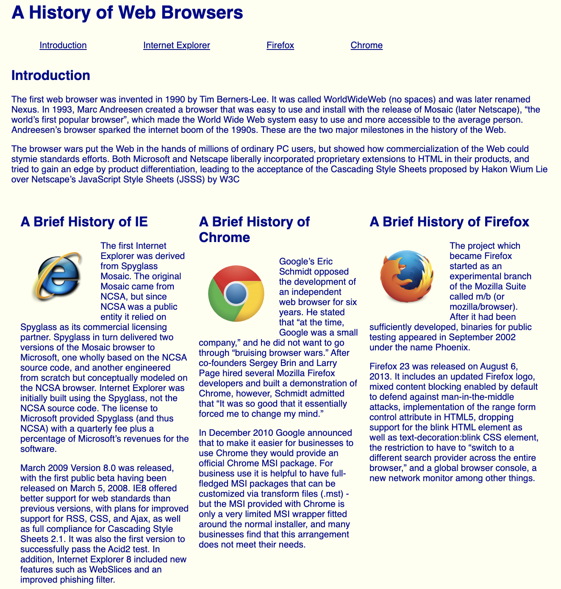

 Prior to completeing the first WODs assignments, I sort of had an idea of what to do for them. I wasn’t confident that I’d get it within the designated optimal times because I tend to go back and forth through different things. The first WOD was the majority of the HTML section. I did it in 37 minutes but it didn’t feel that long. It made me realize that I need to keep practicing the commands and overall just having a better work flow before diving into new projects. When it came to the second WOD, the first part of the CSS portion, I completed that one relatively faster than I expected. At first I think I took longer because I wasn’t used to having to record my screen while doing work. It almost felt like a test and the pressure was on. But, by the second one I was a bit more comfortable. I finished it in 11 minutes. I think I completed it faster since I had some CSS experience during my internship this past summer and it was fresher in my brain. By the time of the third WOD, I thought I was going to finish relatively fast, but I finished it in 27 minutes. I was a little shocked with the time but it was primarily due to the fact that I didn’t know how to align the columns next to each other. I had to review Dr. Port’s video to get the proper spacing. In the end, it turned out well but not perfect. Overall, after completeing the three WODs, it made me realize that it’s much more efficient to practice and know what you’re doing prior to starting the WOD because you will be much faster in terms of completion. This experience also made me realize that one little error can take up a chunk of your time. I felt like I knew that going into this, but experiencing it again in class made me realize even more. For future WODs, I plan to practice the content before hand for a more seamless outcome.